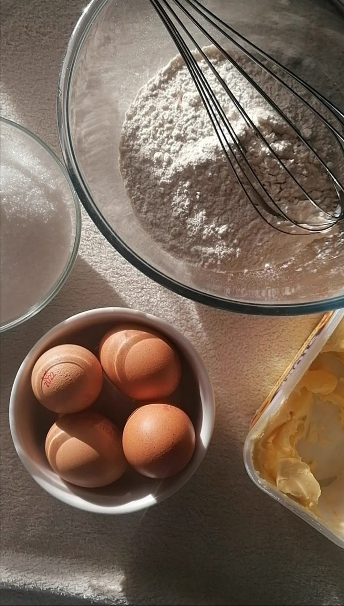
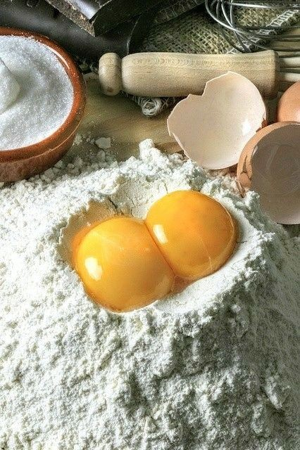
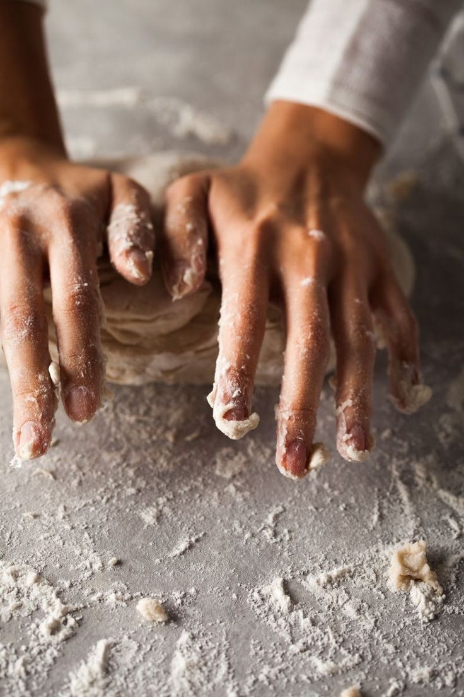
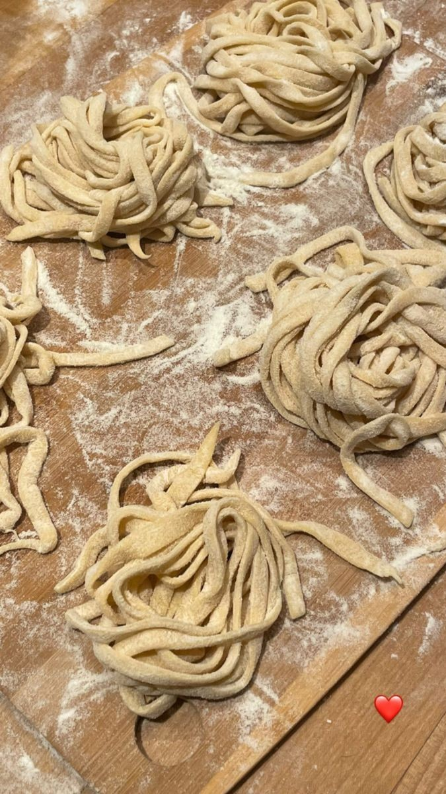
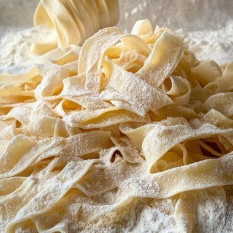
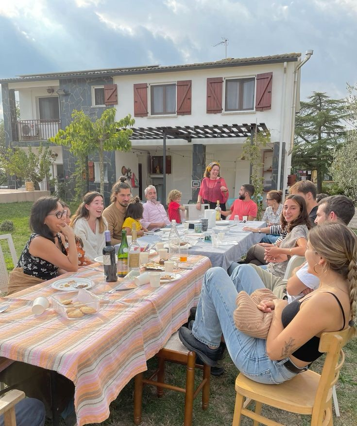

Tano Pastas: El sabor casero que amás
Las mejores pastas frescas, hechas con amor y tradición. ¡Directo a tu mesa!
Ver nuestro MenúLínea del Tiempo
Nuestro Proceso: De la los Fideos caseros
Todo empieza con lo mas simple.
harina y huevos, los de siempre, los que estaban en la cocina de la abuela. Nada más. Quizás un poco de sal, quizás no. Lo importante es tener ganas y algo de tiempo.
Se hace un hueco en la harina
como un pequeño nido, y ahí van los huevos. Se mezclan con las manos, como se hizo siempre, dejando que la masa se forme sola, sin apuro.
Aparece el trabajo de verdad
amasar. La masa al principio se resiste, es rústica, tosca. Pero con paciencia se vuelve suave, tibia, viva. A cada pliegue, más parecida a lo que tiene que ser.
Después viene la pausa
La masa necesita descansar, como si supiera que lo mejor está por venir. Se tapa, se deja en paz, y mientras tanto se puede poner el agua a calentar o simplemente mirar por la ventana.
y entonces llega el momento
Se afina, se alarga, se transforma en láminas que casi dejan pasar la luz. Y se cortan con cuidado, como se vio hacer tantas veces: largas cintas que parecen abrazos.
Finalmente
Apenas unos minutos. El olor que sube es el de casa, el de siempre. Se sirven rápido, porque la pasta no espera, y se comen mejor si alguien se ríe al lado.
Sobre Nosotros
En Tano Pastas, nos apasiona la cocina italiana y la tradición familiar. Desde hace años, nos dedicamos a elaborar pastas frescas con ingredientes de la más alta calidad, siguiendo recetas que han pasado de generación en generación.
Creemos que una buena comida reúne a la familia y amigos, y nuestras pastas están hechas para crear esos momentos especiales. Vení y descubrí el auténtico sabor casero.
Haz tu pedido por WhatsApp
Es rápido y sencillo. Haz clic en el botón para iniciar una conversación.
Pedir por WhatsApp